THE RVOL BATTERY · BACK ON THE BOARD · 1 OCT
The board's RVOL column showed only a number ("0.9×"). The battery is back on every row now, and the number sits beside it. Everything here was checked in a hidden test browser on this Mac, never on your screen. It opened the real scintillahub.ai address, was answered with this branch's page (so the chart service saw its usual address), and read live prices and live relative volume. It was not allowed to save anything: every write would have been blocked, and none was tried. Board: ♥ LIKED, 118 names. Widths: 1680 (your desk), 1280 and 390 (phone).
WHAT EACH ROW SHOWS NOW
1.9× — that is LITE at 13:18 ET.
- The battery (five dots) = how much of a usual whole day's volume has traded so far today. It fills as the day goes on. LITE had done 130% of a usual day's volume by 13:18 ET, so 3 dots.
- The number = the pace: today's volume so far against what the name usually has traded by this time of day. "1.9×" = almost twice its usual by now.
- Hover the cell and both are in words: "today 130% of a usual session so far · 1.9× its usual pace by 13:18 ET".
- No current reading = an empty battery and a dash. It never shows an old charge. The tooltip says when the newest row was written.
- The board's summary line (under COHORT GEIGER) says once: "RVOL: battery = today so far vs a usual full day · number = pace vs usual by now". While not every name has a reading it adds "116 of 118 read".
The dots: July's scale, unchanged
I recovered the battery from the July Hub (commit 7b53b15). The dot rule and the cyan are byte-for-byte the same as then, and they still sit in today's page. What's new is that they are shown on the board again.
| battery = today ÷ a usual whole day | dots lit |
|---|---|
| under 80% | 1 |
| 80% – under 120% | 2 |
| 120% – under 180% | 3 |
| 180% – under 250% | 4 |
| 250% and more | 5 |
In July the battery and the number were the same figure (today ÷ a usual day). Now the battery keeps that figure and the number is the pace by this time of day, as the brief asked.
BEFORE / AFTER · 1680
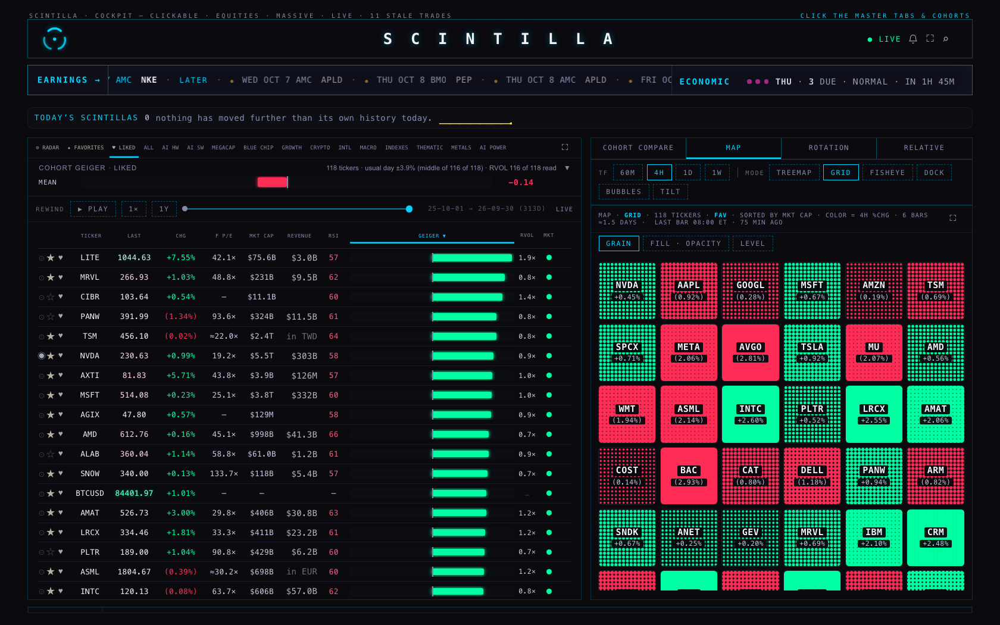
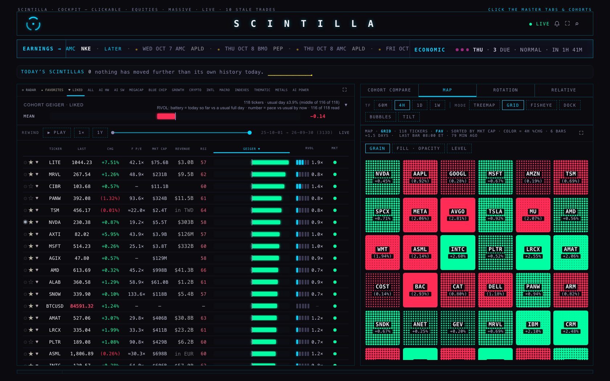
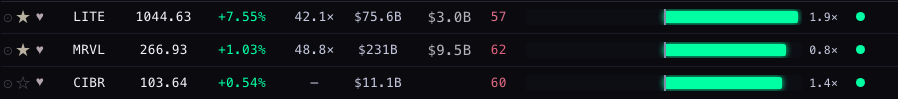
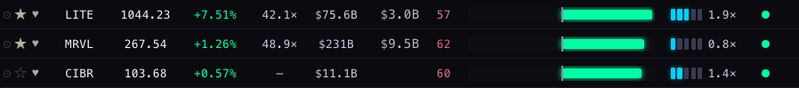
FULL SCREEN (⛶) · 1680
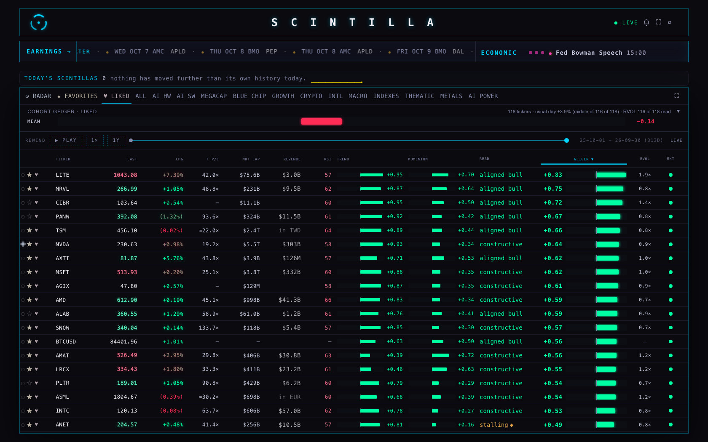
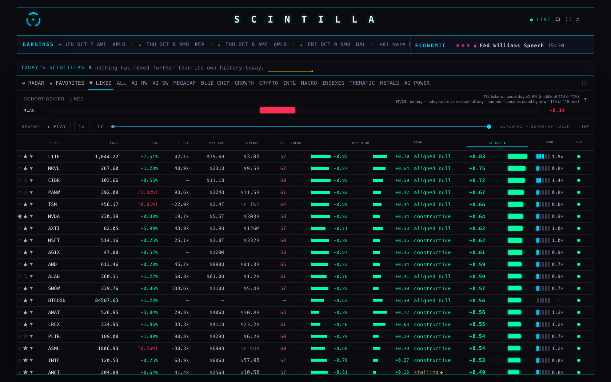
1280
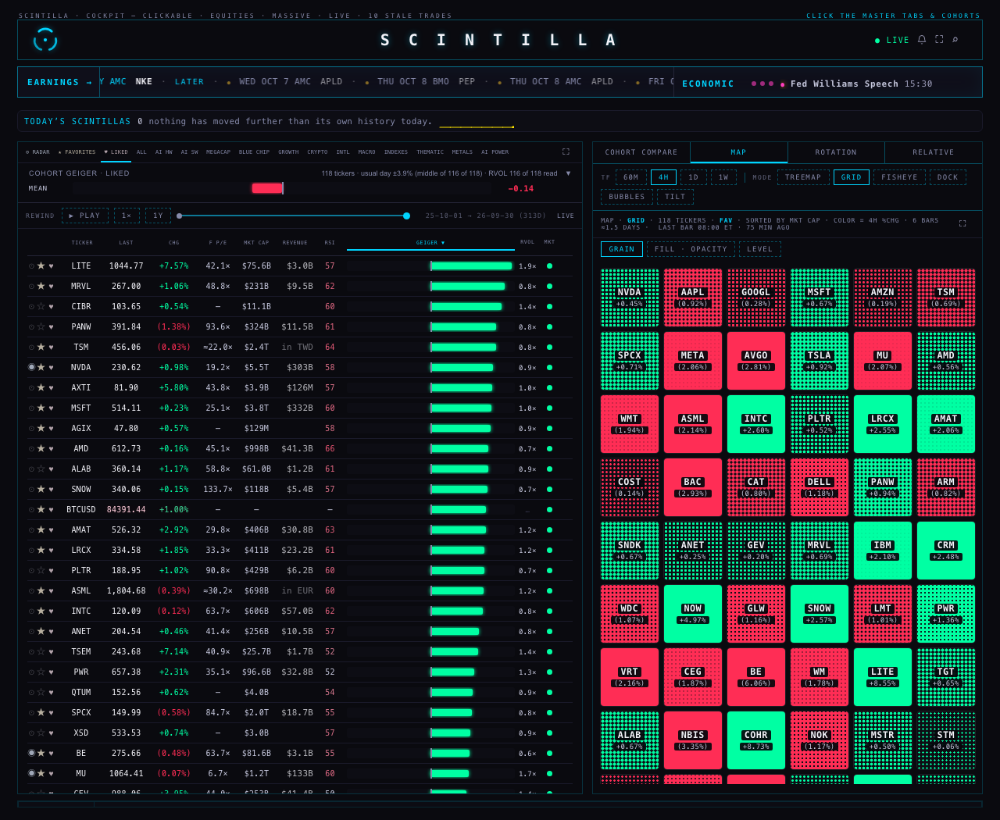
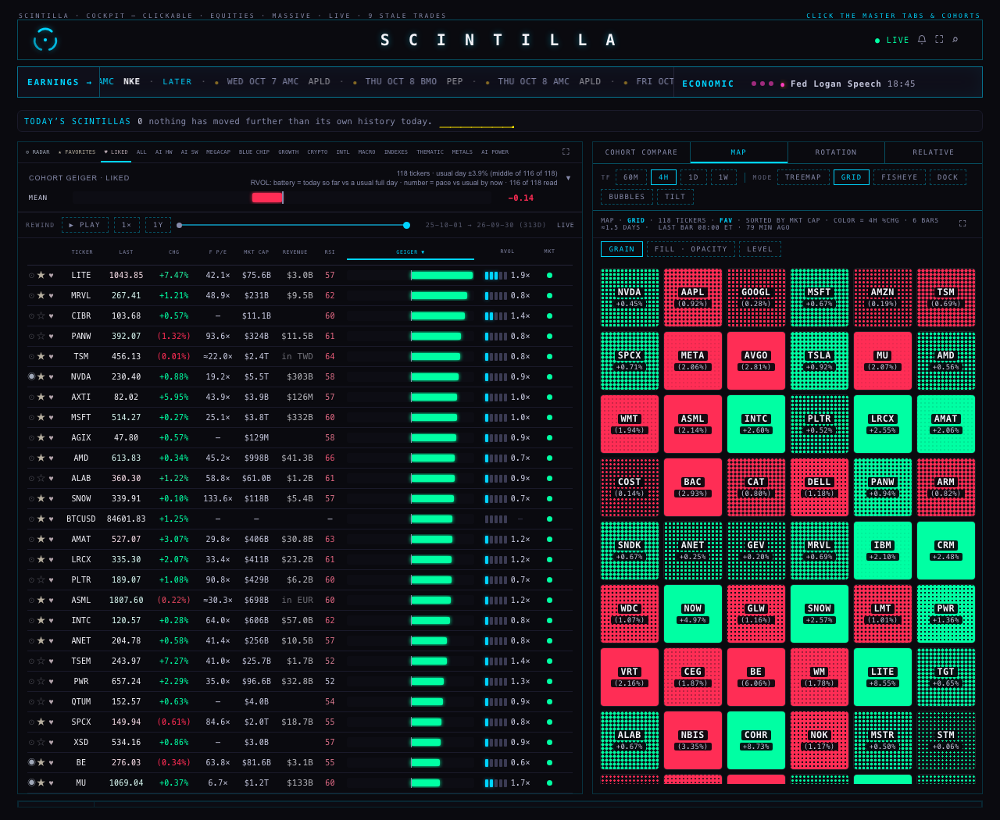
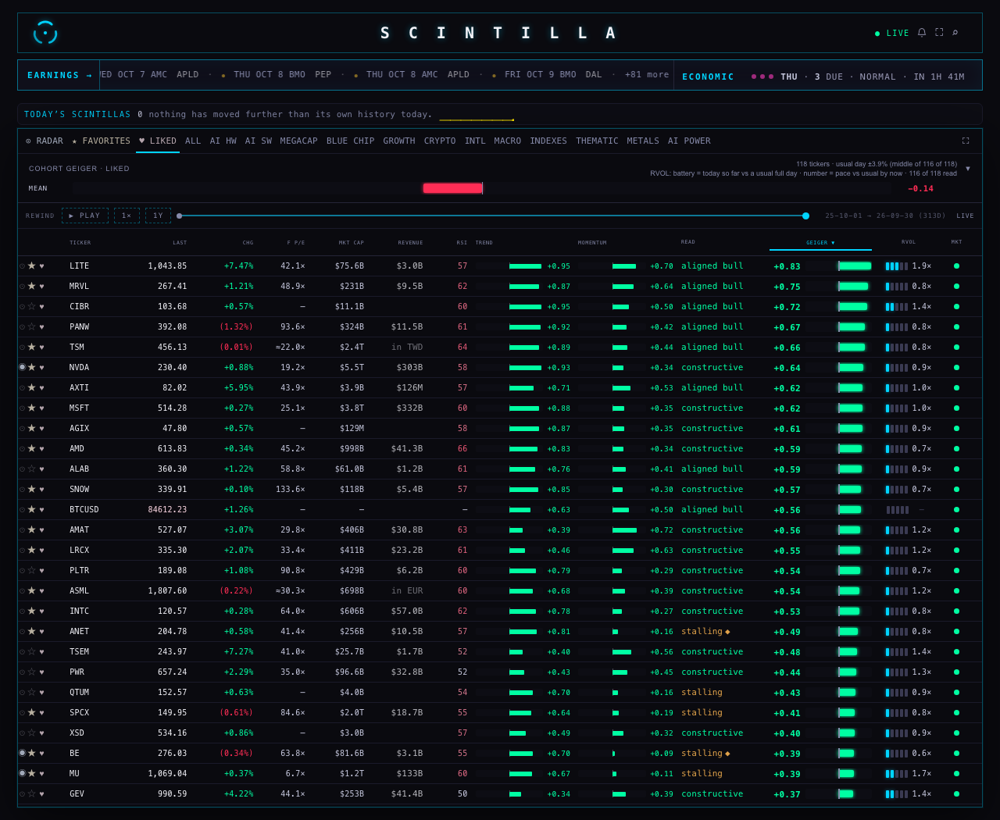
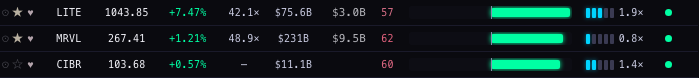
PHONE · 390
The phone board didn't show RVOL at all before (it kept six columns). It does now. It uses July's phone battery: the cells stand upright and fill from the bottom, with the number underneath. That is the layout you approved in July ("the battery goes vertical"). The number has to go under the battery here, because there's no room beside it (see the decisions below).
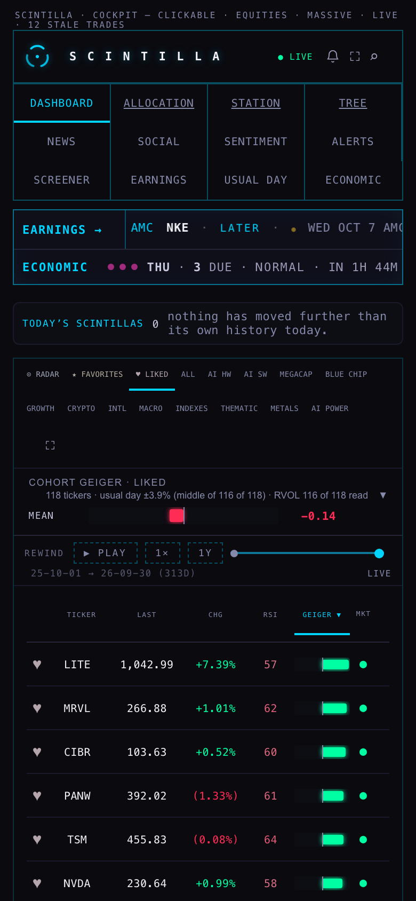
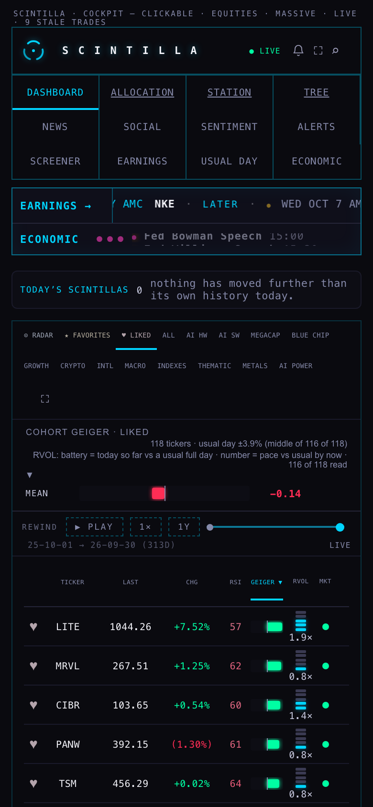
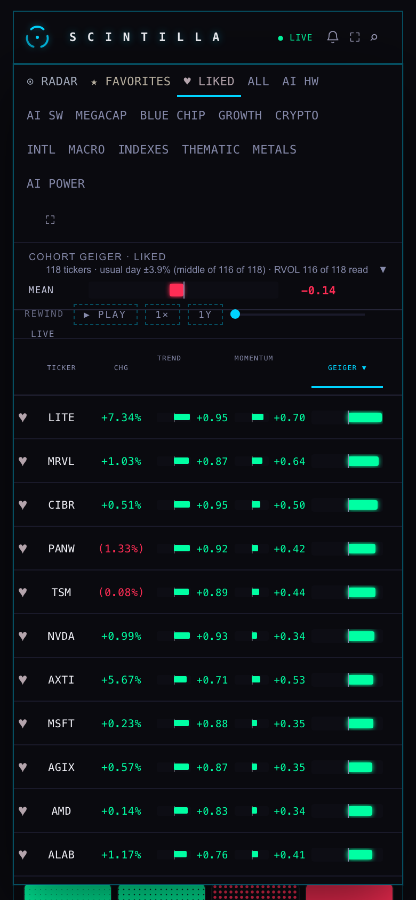
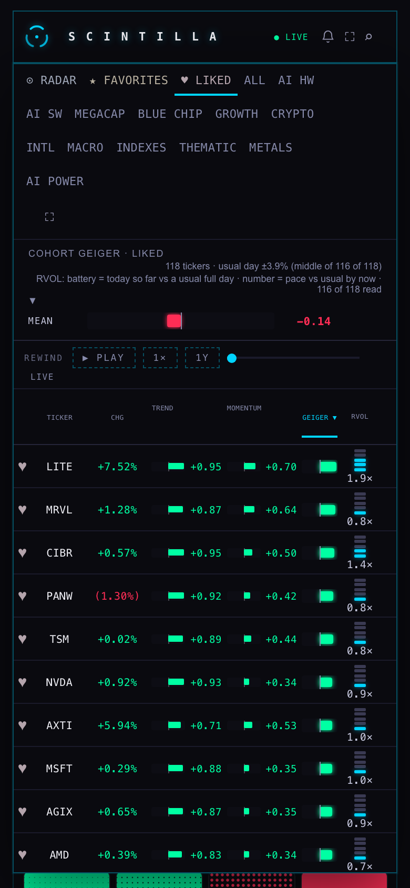
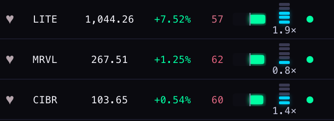
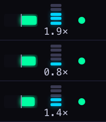
NO CURRENT READING: AN EMPTY BATTERY
The rule for "current" hasn't changed: a row counts only if it was written in the last 36 hours. Two names on your LIKED board fail it today on live data, BTCUSD and GCUSD, whose newest rows are from 6 Jul. Both show five unlit dots and a dash (you can see BTCUSD in the shots above). Below, MRVL's cell has been redrawn by the page's own code as if its row were from 6 Jul. This one is simulated, and the board's next repaint put the real cell back.
THE WIDTH: NOTHING CUT, AND WHERE IT CAME FROM
Measured in the test browser on all 118 rows. I compared each RVOL cell's width with the width of its dots plus its number, and checked every other header label and the first 12 rows of every column for cut text.
| width · view | RVOL cell before | RVOL cell after | needs | Geiger before → after | TICKER · LAST · CHG | cut |
|---|---|---|---|---|---|---|
| 1680 board | 30 px (number only) | 96 px | 73 px | 276 → 210 px | unchanged | none |
| 1680 full screen | 60 px | 96 px | 73 px | 205 → 168 px | unchanged | none |
| 1280 board | 23 px | 75 px | 58 px | 215 → 163 px | unchanged | none |
| 1280 full screen | 47 px | 75 px | 58 px | 159 → 131 px | unchanged | none |
| 390 board | not shown | 30 px | 25 px | 52 → 33 px | unchanged (LAST, CHG +1 px) | none |
| 390 full screen | not shown | 33 px | 25 px | 67 → 33 px | unchanged | none |
- On the desktop the width came from the Geiger only. The two columns still add up to what H4 gave them, so every other column is the same width to the pixel.
- On the phone, RVOL takes width from the Geiger and from RSI's spare room. RSI shows two digits, and its column went from 33 to 23 px. The gaps between columns went from 6 to 4 px, so TICKER, LAST and CHG lost nothing. The phone's header labels are set a little tighter so "GEIGER ▼" isn't cut in its narrower column.
- A pace of 10× or more prints without the decimal ("12×", with "12.3×" in the tooltip), so the number is never more than four characters and never cut. None of your LIKED names was at 10× today; the highest was REZ at 6.3×.
WHERE THE NUMBERS COME FROM
- The table
public.board_volume, written every minute from 04:01 to 20:00 ET for the 590 names by the minute-bar writer (lane P7, from the Massive minute bars). The board reads it on every pull, every 45 seconds. - Battery =
session_rvol: today's volume so far ÷ the usual whole session. Number =rvol_at_time: today's volume so far ÷ the usual volume by this minute. "Usual" is the writer's own baseline; I didn't recompute it. - The time in the tooltip is when that row was written (13:18 ET in the shots).
- When I checked (13:18 ET), 116 of the 118 LIKED names had a current reading. Across them, the battery ran from 21% to 368% of a usual day (middle 58%), and the pace from 0.4× to 6.3× (middle 0.95×).
WHAT COULD BE WRONG
- At midday most batteries show one dot. At 13:18 ET it was 99 of 118: 1 dot; 13: 2 dots; 3: 3 dots; 1: 5 dots; 2: empty. That is July's scale doing what it did in July. Its first dot covers everything up to 80% of a usual day, so the charge only shows its range later in the day or on heavy names. See decision 1.
- Even with no volume at all (04:01, before anything trades), July's scale lights one dot. I kept that unchanged.
- The battery and the number can disagree, and that's on purpose. BAC at 13:18 had 2 dots (115% of a usual day already) but a pace of 2.1×. The battery is about the whole day; the number is about right now.
- The 36-hour rule is unchanged, so on a Saturday the battery still shows Friday's finished day (the row is less than 36 hours old). It's true for that session, but it isn't today's.
- The row's type is the board's own 10 px, the same as the numbers beside it. That's under the 11 px floor in the shared rules, but it matches the row it sits in.
- I checked the board's arithmetic and layout against the table. I didn't check the writer's own figures against raw minute bars.
WHAT I DID NOT DO
- No deploy and no push. The writer, the table, the Indicator Lab,
lab.htmlandINDICATOR_LAB/were not touched. The trial copy of the company view was rebuilt with its own tool after every change to the page. - The RVOL rings on the company page's GEIGER tab are as they were.
- Other widths (900, 1440) weren't measured. The desktop RVOL column is a share of the board's width, so it is narrowest at the narrowest desktop board (1280, measured above).
- RVOL is still not a column you can sort by.
DECISIONS FOR YOU
- The dot scale. July's steps (under 80% / 120% / 180% / 250%) were drawn for a figure that ran all day, so at midday nearly every name shows one dot. Recommendation: keep July's scale (it's what you remembered) and look at the board after 3 pm or at the close. If the battery still feels flat, a "charge" scale of 20% / 40% / 60% / 80% / 100%+ of a usual day per dot would fill through the day like a phone battery. That's a one-line change.
- Phone: the number under the battery or beside it. Beside it would need about 39 px, and the only place to get that is the Geiger, which would shrink to about 20 px. Recommendation: keep it under, as in July.
- Sort by RVOL. Recommendation: yes, by the pace (the number), as a small follow-up. It's one entry in the column list.
FOR THE COORDINATOR
- Commits: one per brief item — 1 the battery on every board row, 2 full screen + the summary line, 3 the stale rule, 4 tests and headless proof. H3- and H4-era tests that pinned the old behaviour (dots hidden, "…" for stale, the old track numbers) were updated in the commit that changed that behaviour, with the reason written next to them.
- Tests:
node --test tests/→ 1633 tests, 1626 pass, the same 5 known failures (baseline 1627 / 1620 / 5). New:tests/h5-rvol-battery-20261001.test.mjs(6 tests). - Harness:
deliverables/20261001/rvol-battery/harness/board.mjs. It is headless, aborts every non-GET request, and writes its measures toshots/*.json, which the test reads.